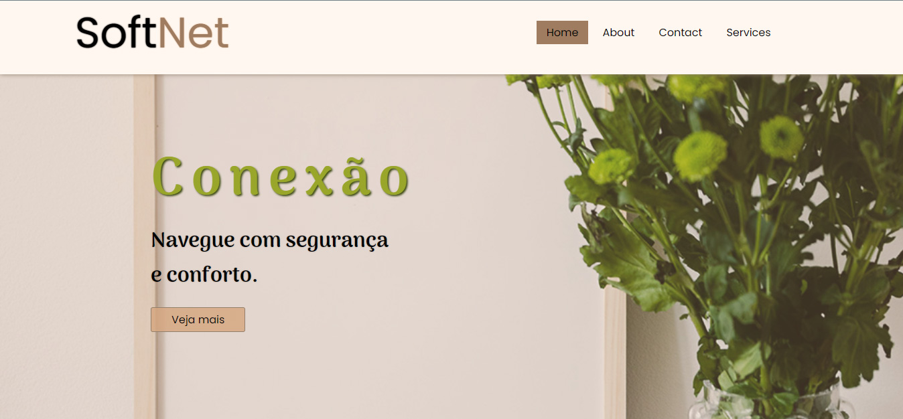
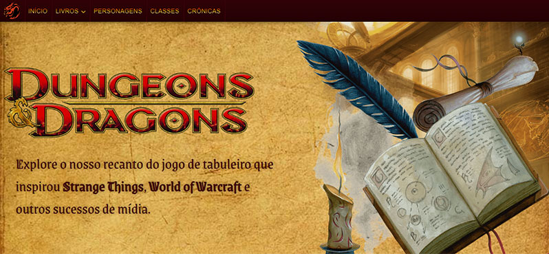

Tenho 18 anos e vivo em Maricá, no Rio de Janeiro.
Tenho estudado Programação todos os dias desde
novembro de 2021.
Comecei com Python, para cálculos estruturais e automações de tarefas.
Entretanto, desde maio de 2022 tenho estudado Desenvolvimento Front-End.
Atualmente, acumulei 3 meses de estudos, e mais de 10 projetos.
Soft Skills
Sou Entusiasmado e Otimista;
Tenho uma Curiosidade Juvenil;
Sou Pontual com Compromissos;
Tenho desejo por Aprender e Viver;
Pra mim é importante realizar coisas com muito Dom;
Dificuldades dificilmente me impedem de fazer o que sou capaz.
Persigo meus sonhos com calma e constância.
Formação
Instituto Federal Fluminense
Técnico em Edificações Integrado ao Ensino Médio
Março de 2019 à 2022
Habilidades
jQuery/Ajax
O jQuery é uma biblioteca JavaScript que facilita o desenvolvimento das aplicações. Esta foi uma tecnologia que aprendi através do Curso do Programação Web, em junho de 2022, e utilizei com frequência em meus projetos. E por ele tive meu primeiro contato com requisições Ajax.
O Node.Js é uma ferramenta muito útil para a utilização do JavaScript fora do navegador. Embora eu tenha o conhecimento fundamental desta tecnologia através do Curso de Javascript do Gustavo Guanabara, e tenho trabalhado com ele desde maio de 2022, ainda não iniciei um Curso específico sobre.
É a linguagem de programação mais utilizada para interatividade em Sites da Web. Comecei meus estudos seguindo pelo Curso do Gustavo Guanabara em maio de 2022. E após concluí-lo, no auto-didatismo tive um breve contato com Design Patterns para Desacoplamento.
É uma linguagem de marcação padronizada para estilização de Hiper Texto. Comecei meus estudos seguindo pelo Curso do Gustavo Guanabara em maio de 2022, que ainda está em lançamento atualmente.
É uma linguagem de marcação padronizada para transferência de Hiper Texto na Web. Comecei meus estudos seguindo pelo Curso do Gustavo Guanabara em maio de 2022, que ainda está em lançamento atualmente.
O Bootstrap é um Framework CSS que traz uma abstração ao desenvolvimento de um site. Aprendi esta tecnologia mesclando o conteúdo do Curso do Programação Web com a leitura da documentação, em junho de 2022.
A prática do Versionamento no desenvolvimento é algo essêncial. Meu conhecimento no Git é superficial, pelo do Curso de HTML do Gustavo Guanabara. Mas já o tenho como uma prática habitual na minha rotina de desenvolvimento.
A prática do Versionamento no desenvolvimento é algo essêncial. Meu conhecimento no Git é superficial, pelo do Curso de HTML do Gustavo Guanabara. Mas já o tenho como uma prática habitual na minha rotina de desenvolvimento.
Meu estudos com esta linguagem de programação se iniciou em janeiro de 2022, acompanhando o Lira da Hashtag. A medida que avancei no Curso do Gustavo Guanabara, criei aplicações para resolver cálculos estruturais e automações de tarefas. Entretanto, não tenho mais programado em Python desde que me formei em março do mesmo ano.
Projetos Recentes


Projeto SoftNet
Este foi meu primeiro projeto trabalhando os conceitos do Mobile First e Minimalismo, bem como, utilizando a biblioteca jQuery para o Scroll suave do site.